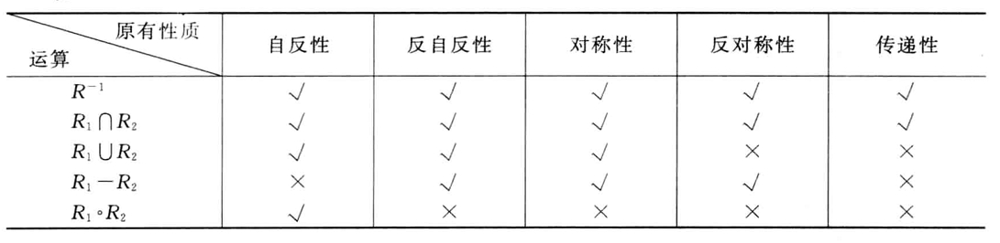
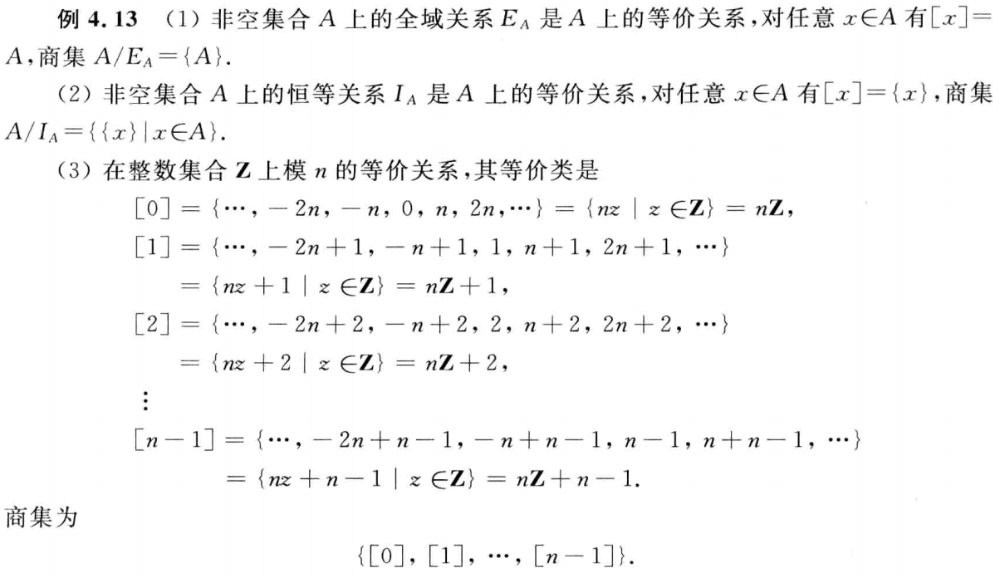
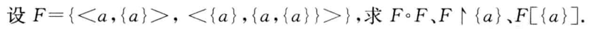
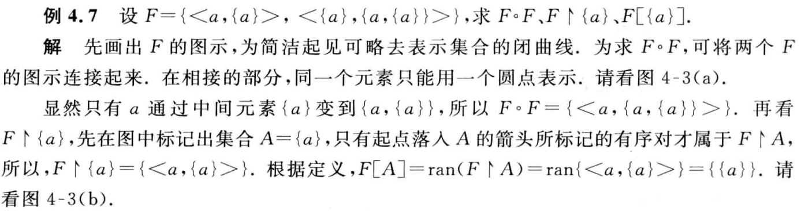
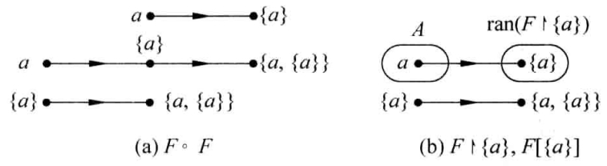
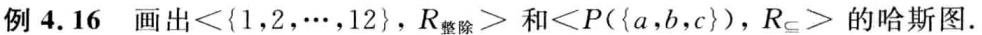
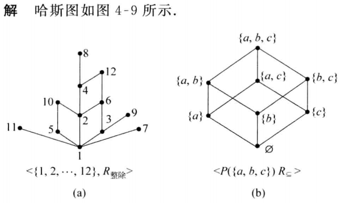

二元关系与函数¶
1 集合的笛卡尔积与二元关系¶
-
有序对
由两个客体按照一定的顺序组成的二元组称为有序对，记作 \(<x, y>\)。
-
有序 \(n\) 元组
一个有序 \(n\) 元组 \(<x_1, x_2, \dots, x_n>\) 是一个有序对，其中第一个元素是一个有序 \(n - 1\) 元组，即 \(<x_1, x_2, \dots, x_n> = <<x_1, x_2, \dots>, x_n>\)，当 \(n = 1\) 时，\(<x>\) 形式上可以看作有序 \(1\) 元组。
-
笛卡尔积
设 \(A\)，\(B\) 为集合，\(A\) 与 \(B\) 的笛卡尔积记作 \(A \times B\)，即 \(A \times B = \{<x, y> | x \in A \wedge y \in B\}\)
笛卡尔积的性质
- 没有交换律和结合律。
-
对于并或交满足分配律
\[\begin{align*} &A \times (B \cup C) = (A \times B) \cup (A \times C)\\ &(B \cup C) \times A = (B \times A) \cup (C \times A)\\ &A \times (B \cap C) = (A \times B) \cap (A \times C)\\ &(B \cap C) \times A = (B \times A) \cap (C \times A) \end{align*}\] -
若 \(A\) 或 \(B\) 中有一个为空集，那么 \(A \times B\) 就是空集。
- 若 \(|A| = m\)，\(|B| = n\)，则 \(|A \times B| = mn\)。
-
二元关系
如果一个集合满足以下条件之一：集合非空且它的元素都是有序对 或 集合是空集，则称该集合为一个二元关系，简称为关系，记作 \(R\)。若 \(<x, y> \in R\)，可记作 \(xRy\)；若 \(<x, y> \not \in R\)，可记作 \(x \not R y\)
重要关系
- \(\varnothing\) 是 \(A\) 上的关系，称为空关系。
- \(E_A = \{<x, y> |\ x \in A \wedge y \in A\} = A \times A\)，称为全域关系。
- \(I_A = \{<x, x> |\ x \in A \}\)，称为恒等关系。
- \(L_A = \{<x, y> |\ x \in A \wedge x \le y\},A \subseteq R\)，称为小于等于关系。
- \(D_A = \{<x, y> |\ x,y \in B \wedge x | y \},B \subseteq Z^*\)，称为整除关系。
- \(R_{\subseteq} = \{<x, y> |\ x,y \in B \wedge x \subseteq y \}\)，其中 A 是集合族，称为包含关系。
-
关系的表示
表示方式有集合表达式、关系矩阵、关系图等。
2 关系的运算¶
-
基本运算
- 定义域：\(\mathrm{dom}R = \{x\ |\ \exists y(<x, y> \in R)\}\)
- 值域：\(\mathrm{ran}R = \{y\ |\ \exists y(<x, y> \in R)\}\)
- 域：\(\mathrm{fld}R = \mathrm{dom}R \cup \mathrm{ran}R\)
- 逆：\(R^{-1} = \{<y, x> | <x, y> \in R\}\)
- 合成：\(R \circ S = \{<x, z> |\ \exists y (<x, y> \in S \vee <y, z> \in R)\}\)
- 限制：\(F \upharpoonright A = \{<x, y> |\ xFy \wedge x \in A \}\) 记为 \(F\) 在 \(A\) 上的限制。
- 像：\(F[A] = \mathrm{ran}(F \upharpoonright A)\) 记为 \(A\) 在 \(F\) 下的像。
-
关系基本运算的性质
- \((F^{-1})^{-1} = F\)
- \(\mathrm{dom}F^{-1} = \mathrm{ran}F, \mathrm{ran}F^{-1} = \mathrm{dom}F\)
- \((F \circ G) \circ H = F \circ (G \circ H)\)
- \((F \circ G)^{-1} = G^{-1} \circ F^{-1}\)
-
幂运算
- 设 \(R\) 为 \(A\) 上的关系，\(n\) 为自然数，则 \(R\) 的 \(n\) 次幂规定为：
- \(R^0 = \{<x, x> |\ x \in A\}\)
- \(R^n = R^{n - 1} \circ R, n \ge 1\)
- 幂运算可以通过关系矩阵或关系图来求得。
- 幂运算的性质
- \(R^m \circ R^n = R^{m + n}\)
- \((R^m)^n = R^{mn}\)
- 设 \(A\) 为 \(n\) 元集，\(R\) 是 \(A\) 上的关系，则存在自然数 \(s\) 和 \(t\)，使得 \(R^s = R^t\)（由于 \(A\) 上不同的关系一共有 \(2^{n^2}\) 个，故 \(R\) 经过若干次幂运算一定会重复出现的）。
- 设 \(R\) 为 \(A\) 上的关系，\(n\) 为自然数，则 \(R\) 的 \(n\) 次幂规定为：
3 关系的性质¶
- 自反性与反自反性
- 设 \(R\) 为 \(A\) 上的关系，若 \(\forall x(x \in A \to <x, x> \in R)\)，则称 \(R\) 在 \(A\) 上是自反的。
- 设 \(R\) 为 \(A\) 上的关系，若 \(\forall x(x \in A \to <x, x> \not \in R)\)，则称 \(R\) 在 \(A\) 上是反自反的。
- 对称性与反对称性
- 设 \(R\) 为 \(A\) 上的关系，若 \(\forall x \forall y(x,y \in A \wedge <x, y> \in R \to <y, x> \in R)\)，则称 \(R\) 为 \(A\) 上对称的关系。
- 设 \(R\) 为 \(A\) 上的关系，若 \(\forall x \forall y(x,y \in A \wedge <x, y> \in R \wedge <y, x> \in R \to x = y)\)，则称 \(R\) 为 \(A\) 上的反对称关系。
- 传递
- 设 \(R\) 为 \(A\) 上的关系，若 \(\forall x \forall y \forall z(x,y,z \in A \wedge <x, y> \in R \wedge <y, z> \in R \to <x, z> \in R)\)，则称 \(R\) 为 \(A\) 上的传递关系。
关系性质的充要条件
- \(R\) 在 \(A\) 上自反当且仅当 \(I_A \subseteq R\)。
- \(R\) 在 \(A\) 上反自反当且仅当 \(R \cap I_A = \varnothing\)。
- \(R\) 在 \(A\) 上对称当且仅当 \(R = R^{-1}\)。
- \(R\) 在 \(A\) 上反对称当且仅当 \(R \cap R^{-1} \subseteq I_A\)。
- \(R\) 在 \(A\) 上传递当且仅当 \(R \circ R \subseteq R\)。


关系性质的证明
- 自反性证明：\(x \in A \Rightarrow <x, x> \in R\)
- 对称性证明：\(<x, y> \in R \Rightarrow <y, x> \in R\)
- 反对称性证明：\(<x, y> \in R \wedge <y, x> \in R \Rightarrow x = y\)
- 传递性证明：\(<x, y> \in R \wedge <y, z> \in R \Rightarrow <x, z> \in R\)
4 关系的闭包¶
-
基本概念
- 设 \(R\) 是非空集合 \(A\) 上的关系，\(R\) 的自反（对称或传递）闭包是 \(A\) 上的关系 \(R'\)，使得 \(R'\) 满足以下条件：
- \(R'\) 是自反的（对称的或传递的）。
- \(R \subseteq R'\)
- 对 \(A\) 上任何包含 \(R\) 的自反（对称或传递）关系 \(R''\) 有 \(R' \subseteq R''\)
\(R\) 的自反（对称或传递）闭包就是包含 \(R\) 的最小满足自反（对称或传递）性质的关系。 一般将 \(R\) 的自反闭包记作 \(r(R)\)，对称闭包记作 \(s(R)\)，传递闭包记作 \(t(R)\)。
- 设 \(R\) 是非空集合 \(A\) 上的关系，\(R\) 的自反（对称或传递）闭包是 \(A\) 上的关系 \(R'\)，使得 \(R'\) 满足以下条件：
-
闭包的构造方法
- 设 \(R\) 为 \(A\) 上的关系，则有
- \(r(R) = R \cup R^0\)
- \(s(R) = R \cup R^{-1}\)
- \(t(R) = R \cup R^2 \cup R^3 \cup \dots\)
- 用关系矩阵表示：
- \(M_r = M + E\)
- \(M_s = M + M'\)
- \(M_t = M + M^2 + M^3 + \dots\)
- 设 \(R\) 为 \(A\) 上的关系，则有
5 等价关系与偏序关系¶
-
等价关系
- 设 \(R\) 是非空集合上的关系，若 \(R\) 是自反，对称，传递的，则称 \(R\) 是 \(A\) 上的等价关系。若 \(R\) 是等价关系且 \(<x, y> \in R\)，那么 \(x \sim y\)，称 \(x\) 等价于 \(y\)。
-
等价类
-
设 \(R\) 为非空集合 \(A\) 上的等价关系，\(\forall x \in A\)，令 \([x]_R = k\{y |\ y \in A \wedge y R x\}\)，则称 \([x]_R\) 为 \(x\) 关于 \(R\) 的等价类，简称为 \(x\) 的等价类，简记为 \([x]\)。
-
性质
- \(\forall x \in A\)，\([x]\) 是 \(A\) 的非空子集。
- 若 \(xRy\)，则 \([x] = [y]\)。
- 若 \(x\not R y\)，则 \([x]\) 与 \([y]\) 无交集。
- 所有等价类的并集是 \(A\)。
-
-
商集
- 设 \(R\) 为非空集合 \(A\) 上的等价关系，以 \(R\) 的所有等价类作为元素的集合称为 \(A\) 关于 \(R\) 的商集，记作 \(A/R\)，\(A/R = \{[x]_R |\ x\in A\}\)。
- 商集里的元素是若干个等价类。
举个栗子

-
集合的划分
- 设 \(A\) 为非空集合，若 \(A\) 的子集族 \(\pi(\pi \subseteq P(A))\) 满足下列条件，则称 \(\pi\) 是 \(A\) 的一个划分，称 \(\pi\) 中的元素是 \(A\) 中的划分块。
- \(\varnothing \not \in \pi\)
- \(\forall x \forall y(x, y \in \pi \wedge x \not ={y} \to x \cap y = \varnothing)\)
- \(\cup \pi = A\)
- 集合的划分和等价关系是一一对应的，对于给定的划分 \(\pi\)，有 \(R = \{<x, y>|\ x, y \in A\wedge x 和 y 在 \pi 的同一划分块中\}\)。
- 设 \(A\) 为非空集合，若 \(A\) 的子集族 \(\pi(\pi \subseteq P(A))\) 满足下列条件，则称 \(\pi\) 是 \(A\) 的一个划分，称 \(\pi\) 中的元素是 \(A\) 中的划分块。
-
偏序关系
- 非空集合 \(A\) 上的自反，反对称和传递关系称为 \(A\) 上的偏序关系，记作 \(preceq\)，设 \(preceq\) 为偏序关系，如果 \(<x, y> \in \preceq\)，则记作 \(x \preceq y\)，读作 \(x\) 小于或等于 \(y\)。这里表示的是在此偏序关系里，同一有序对中 \(x\) 一定出现在 \(y\) 的前面。
- 偏序集：一个集合 \(A\) 与 \(A\) 上的偏序关系 \(R\) 一起称作偏序集，记作 \(<A, R>\)。
- \(x\) 与 \(y\) 可比：对于偏序集 \(<A, \preceq>\)，若某 \(x, y \in A\) 满足 \(x\preceq y \wedge y \preceq x\)，则 \(x\) 与 \(y\) 可比。
- \(y\) 盖住 \(x\)：若 \(x \prec y\)（即 \(x \preceq y \wedge x \not ={y}\)），且不存在 \(z \in A\) 使得 \(x \prec z \prec y\)，则称 \(y\) 盖住 \(x\)。
- 全序关系：对于 \(\forall x, y \in A\)，\(x\) 和 \(y\) 都是可比的，则称 \(R\) 为全序（或线序）。
- 哈斯图：利用偏序自反、反对称、传递性简化的关系图。
- 特点：每个结点没有环，两个连通的结点之间的序关系通过结点位置的高低表示，位置低的元素的顺序在前，具有覆盖关系的两个结点之间连边。
-
偏序集的特殊元素：
对于偏序集 \(<A, \preceq>\)，且 \(B \subseteq A, y \in B\)。
-
最小元：若 \(\forall x(x \in B \to y \preceq x)\) 成立，则称 \(y\) 为 \(B\) 的最小元。（说明所有元素都和 \(y\) 有偏序关系）
-
最大元：若 \(\forall x(x \in B \to x \preceq y)\) 成立，则称 \(y\) 为 \(B\) 的最大元。（说明所有元素都和 \(y\) 有偏序关系）
-
极小元：若 \(\neg \exists x(x \in B \wedge x \prec y)\) 成立，则称 \(y\) 为 \(B\) 的极小元。
-
极大元：若 \(\neg \exists x(x \in B \wedge y \prec x)\) 成立，则称 \(y\) 为 \(B\) 的极大元。
对于偏序集 \(<A, \preceq>\)，且 \(B \subseteq A, y \in A\)。
-
上界：若 \(\forall x(x \in B \to x \preceq y)\) 成立，则称 \(y\) 为 \(B\) 的上界。（说明所有元素都和 \(y\) 有偏序关系）
-
上确界：上界中的最小元。
-
下届：若 \(\forall x(x \in B \to y \preceq x)\) 成立，则称 \(y\) 为 \(B\) 的下界。（说明所有元素都和 \(y\) 有偏序关系）
-
下确界：下界中的最大元。
特殊元素的性质
- 对于有穷集，极小元和极大元必存在，可能存在多个。
- 最小元和最大元不一定存在，如果存在一定惟一。
- 最小元一定是极小元；最大元一定是极大元。
- 孤立结点既是极小元，也是极大元。
- 下界、上界、下确界、上确界不一定存在。
- 下界、上界存在不一定惟一。
- 下确界、上确界如果存在，则惟一。
- 集合的最小元就是它的下确界，最大元就是它的上确界；反之不对。
-
6 例题¶
-
e.g.1

Solution


这里需要注意的是，在 \(F \upharpoonright \{a\}\) 和 \(F[\{a\}]\) 中，\(\{a\}\) 是一个集合而非元素，故这里的定义域中的元素是 \(a\) 而非 \(\{a\}\)，不要弄混。
-
e.g.2

Solution
